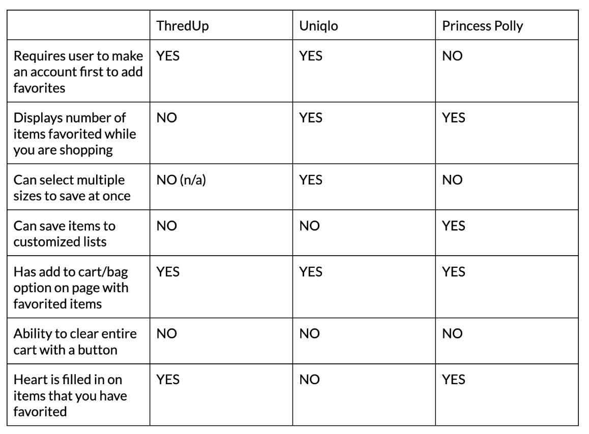
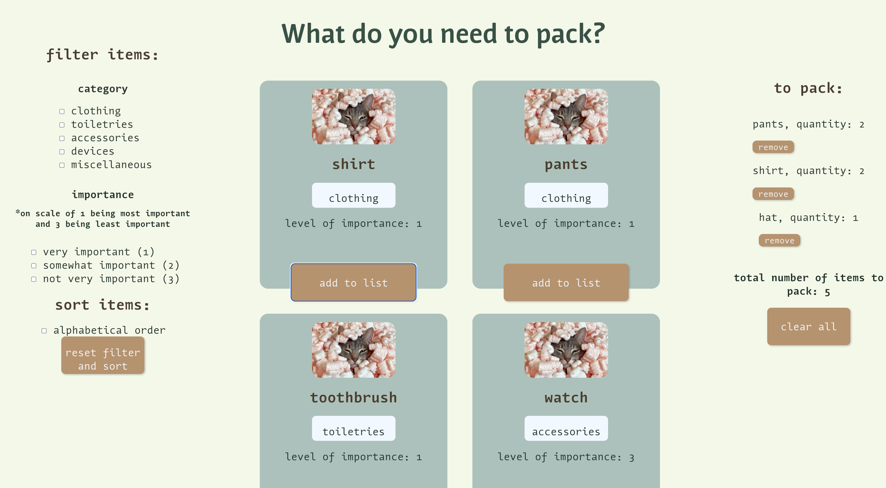

I. Background
Many websites have a favoriting option and aggregators. But not all of them implement them the same way. I did a competitive analysis to look at the design choices of three sites and to inform my the implementation of my own app for creating a list of items to pack.
II. Competitive Analysis
I looked at three clothing sites - ThredUp, Uniqlo, and Princess Polly - to see how they implemented their favoriting features. Here's a chart of some features across the sites.
Links to Sites:
ThredUpUniqlo
Princess Polly
I like how the Uniqlo and Princess Polly sites show how many items are favorited, designated by a number that is in the corner with a heart. It reminds the user how many items they may want to take a second look at, and it may encourage the user to revisit their favorites and buy them. Another feature I liked was being able to see which items have already been added. ThredUp and Princess Polly have a heart on each item, which is filled when it is favorited. For Uniqlo, each item also has a heart, but this heart is not filled in if the item is favorited, which may confuse the user. From a design perspective, the use of color makes it more clear which items have already been added and overall makes the favoriting option less confusing.
One feature that I did not think was effective was requiring the user to make an account in order to add favorites. ThredUp and Uniqlo wanted me to make an account in order to favorite items, and though this may be beneficial for getting more people to make accounts, I felt like this feature made me want to leave the site instead because it was just another additional step I had to take towards my intended goal.
In my own implementaion, I want the user to be able to see the total number of items favorited since I found this feature effective. For my app in particular, it would be helpful to see how many items a person still has left to pack. I also would want the option to clear the aggregator. For all three of the sites, I had to remove items individually if I no longer wanted them in my favorites, which could get tedious if I favorited a lot of items. Thus, it would be more convenient to have the option of clearing a list completely. These are features that I implement in my own app, which you can read about below!
III. Packing Interface
As someone who always makes lists for everything, I thought it would be useful to have a tool for planning "to-pack" lists. The app allows the user to filter by types of items, such as clothing and toiletries, and by degree of importance. There is also a sorting feature to sort by alphabetical order to make it easier to find items to add. On the right side of the app, there is an aggregator that totals up number of items added, which could gives the user an idea of how much they still have to pack. Users can also remove items from the aggregator once they have packed the corresponding items.
IV. Takeaways
I wish I implemented the remove item feature through an "X" instead of a button, which takes up more space and looks clunky. I was a little low on time, but I would definitely revisit this project and see how I can continue to improve my design.
It was helpful to take inspiration from the different sites, and competitive analysis was a very effective tool in comparing their differences. This was good practice in seeing what design choices were effective and to take inspiration for my own implementations!